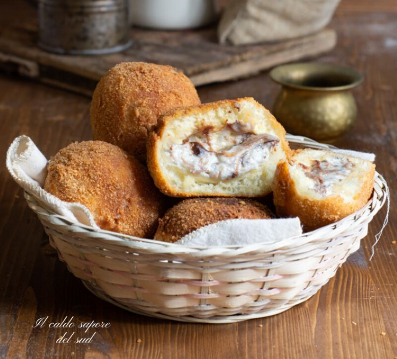
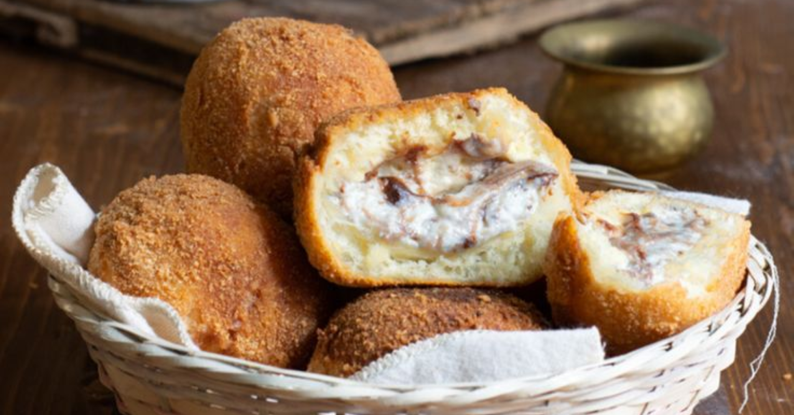

Iris ripieno:
- 500 g di farina 00
- 40 g di strutto
- 10 g di sale
- 250 ml di acqua
- 60 g di zucchero
- 1 bustina di lievito di birra disidratato (7 g)
- 400 ml di acqua
- 200 g di farina 00
- 80 g di cioccolato fondente tagliato a scaglie
- q.b. di pangrattato
- 1 tuorlo
- 1 cucchiaio di latte
- q.b. di crema di ricotta


Procedimento:
- All’interno di una ciotola o in planetaria versate la farina 00
- Aggiungete anche lo zucchero semolato ed il lievito secco disidratato ed iniziate a mescolare questi primi ingredienti
- Solo a questo punto potete aggiungere lo strutto, che deve essere a temperatura ambiente così che risulti ben morbido e lavorabile.
- Versate anche l’acqua, sempre a temperatura ambiente o leggermente intiepidita così da facilitare la lievitazione dell’impasto
- Non resta che aggiungere il sale. Iniziate, quindi, ad impastare tutti gli ingredienti all’interno della ciotola
- Piano piano prenderà forma un panetto. Dovrete continuare al avorare fino a quando questo panetto inizierà a prendere consistenza e diventerà liscio e non più appiccicoso.
- Non resta che spostare l’impasto sul piano di lavoro e continuare a lavorare per qualche altro minuto. Ottenuto un panetto be liscio formate una palla pirlando velocemente l’impasto
- Riponete l’impasto all’interno di una ciotola, coprite con pellicola trasparente e quindi fate lievitare in forno spento ma con luce accesa per 2 ore o fino al raddoppio del volume iniziale.
- Terminata la lievitazione l’impasto andrà ridotto in 8 tocchetti da circa 100 g. Ogni tocchetto andrà lavorato sul piano di lavoro portando i lembi esterni verso l’interno e poi facendolo ruotare in modo tale da dare forma ad una pallina.
- Le farete lievitare per 20 minuti in forno spento ma con luce accesa
- Cuocete ora in forno preriscaldato statico a 180°C per 20 minuti o fino a quando risulteranno dorate.
- fate freddare completamente
- fate un buco nella parte sottostante ed estreaete intero il tappo che terrete da parte perchè vi servirà per richiudere la vostra iris. Scavate l’interno della briscina così da svuotarla
- Aggiungete la crema di ricotta all’interno.